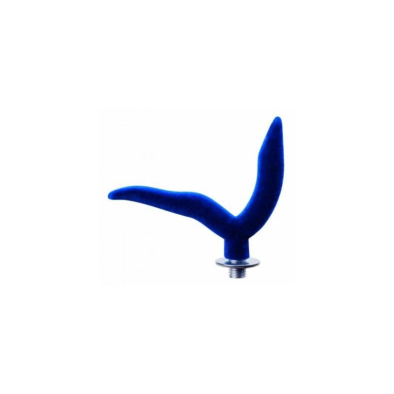

Meškerės pigiau
 Registruotis Prisijungti Pageidavimai (0) Mano paskyra Prekių krepšelis Atsiskaitymas Setting Menu Pageidavimai (0) Mano paskyra Prekių krepšelis Atsiskaitymas
Registruotis Prisijungti Pageidavimai (0) Mano paskyra Prekių krepšelis Atsiskaitymas Setting Menu Pageidavimai (0) Mano paskyra Prekių krepšelis Atsiskaitymas
+370 635 33816
Konsultacijos ir pagalba telefonu
Grąžinimas
100% grąžinimo garantija
Atsiskaitymas
Saugaus atsiskaitymo garantas
Prekių krepšelis
0 prekė(s) - 0.00€ Jūsų prekių krepšelis tuščias Toggle navigation Pradžia Akcijos Dovanų kuponai Straipsniai Kontaktai Pagrindinis Meškerės Kategorijos Meškerės Visų tipų meškerės ir spiningai profesionalams ir žvejams mėgėjams Žvejybai iš laivo Jigo spiningai Spiningai Fyderiai Pikeriai Karpinės meškerės Jūriniai spiningai Muselinės meškerės Spiningai velkiavimui Surf meškerės Pole meškerės Match tipo meškerės Bolognes meškerės Ritės Įvairių gamintojų žvejybinės rites ir multiplikatoriai Apranga, avalynė Rūbai,avalynė ir aksesuarai žvejybai, medžioklei bei laisvalaikiui gamtoje Kostiumai Žieminiai kostiumai Neskęstantys kostiumai Demisezoniniai kostiumai Kostiumai nuo vabzdžių Jogeriai Striukės Bridkelnės Kelnės Liemenės Gelbėjimosi liemenės Avalynė Batai Įdėklai batams Vidpadžiai Braidymo batai Šlepetės Batų raišteliai Priemonės nuo praslydimo Sandalai Bliuzonai Marškinėliai Apatiniai rūbai Apatinės kelnės Vyriški apatiniai Maudymosi glaudės Maudymosi kostiumėliai Šilti apatiniai Aksesuarai Kojinės Akiniai Kepurės Kepurėlės su snapeliu Sportiškos kepurės Pirštinės Balaklavos Apyrankės, galvajuostės Šalikai, movos Apsauginiai getrai Lietaus drabužiai Kombinezonai Antkeliai Polo marškinėliai Žvejybinės liemenės Šortai Plaukiojimui Pripučiamos valtys, varikliai, akumuliatoriai ir kiti reikmenys žvejybai ar poilsiui ant vandens Pripučiamos valtys Elektriniai varikliai Benzininiai varikliai Priedai valtims ir varikliams Pompos valtims Inkarai Uždangalai - tentai Klijavimo priemonės Laikikliai ir kita Irklai Gelbėjimo ir kitos priemonės Priekabos Dujiniai varikliai Irklentės Žvejybinės baidarės Elektronika ir optika Echolotai, radijo stotelės, navigacija, žiūronai ir kita optikos įranga Akumuliatoriai Echolotai, GPS įranga Radijo stotelės Žibintuvėliai ir šviestuvai Vaizdo kameros Žiūronai Kolimatoriai Monokoliai Jūriniai žiūronai Žiūronai medžioklei Žiūronų priedai Paukščių stebėjimui Žiūronai laisvalaikiui Apžvalgos žiūronai Astronominiai žiūronai Akumuliatorių įkrovikliai Kompasai Automobiliniai šaldytuvai Didinamieji stiklai Baterijos Megafonai Metalo detektoriai Laikrodžiai Reikmenys Įrankiai ir priemonės žvejybai, krepšiai, graibštai ir kiti smulkūs reikmenys Krepšiai Kuprinės Dėžės, dėklai, krepšiai Žvejybinės dėžės Dėklai - krepšiai masalams Dėklai meškerėms Dėklai akiniams Neperšlampantys dėklai Dėžutės masalams Dėklai įrangai Dėklai plūdėms Dėklai avižėlėms Dėklai pavadėliams Žvejybinės kuprinės Žvejybiniai krepšiai Graibštai ir tinkleliai Stovai ir laikikliai meškerėms Laikikliai įrangai Karpinei/dugninei zvejybai Signalizatoriai Skambučiai, švieselės Staleliai Valai Paprasti (mono) valai Fluorokarbono valai Pinti valai Pavadėliai Karpiniai valai Jūriniai valai Žieminiai valai Muselinis valas Nailono valai Svareliai, galvakabliai Svarelių rinkiniai Svareliai Karpiniai svareliai Galvakabliai Svareliai Čeburaškos Smulkmenos žvejybai Žiedeliai meškerėms Galūnės meškerėms Plūdės Kabliukai Ofsetiniai Trišakiai Kabliukai su užkarpėlėmis Karpiniai kabliukai Universalūs kabliukai Kabliukai masalams Segtukai, suktukai Stabdžiai plūdėms Gumos Švieselės Stoperiai Kaprono virvės Kembrikai Kabliai Pavadėliai Priedai Apsaugos meškerėms Tepalas Aksesuarai Žvejybiniai Įrankiai Žvejybinės replės Žnyplės, ekstraktoriai Žirklės, kandikliai Žiodikliai Valo surišėjai Svarstyklės Dirbtiniai masalai Vobleriai, riperiai, sukriukės, guminukai, pilkeriai, avižėlės ir kiti dirbtiniai masalai Spiningo masalai Blizgės Guminukai Sukriukės Vobleriai Pilkeriai Sistemėlės Jūrinės sistemėlės Karpinės sistemėlės Jūrinės gumos Hibridiniai masalai Jaukai žuvims Kvapai, pašarai, boiliai bei jaukinimo reikmenys, šeryklėlės, laidynės ir kita Reikmenys jaukinimui Šėryklos Dėklai jaukams Laidynės Kibirai Indai jaukams Priedai Sieteliai Staliukai Vamzdeliai šėryklėlėms Kvapai Klijai jaukui Boiliai Emulsija boiliams Granuliuoti jaukai Birūs jaukai Miniboiliai Stovyklavimui Palapinės, miegmaišiai, kėdės ir kita įranga stovyklavimui, poilsiui gamtoje Poilsiui ir miegui Palapinės Miegmaišiai Čiužiniai Pompos čiužiniams Pavėsinės, skėčiai Turistiniai kilimėliai Pagalvėlės Pikniko kilimėliai Priedai palapinėms Krepšiai, kuprinės Šaltkrepšiai Turistinės kuprinės Neperšlampantys krepšiai Paplūdimio krepšiai Lagaminai Sportinės kuprinės Kelioniniai krepšiai Mini krepšiai Įvairūs dėklai Sportiški krepšiai Juosmens krepšiai Lauko baldai Kėdės Sulankstomos lovos Stalai Sulankstomos kėdės Komplektai Gultai, šezlongai Maisto ruošimui Dujų balionėliai Rukyklos Puodai Turistinės viryklės Maisto šildytuvai Indai išvykoms Gertuvės Dėžutės maistui Termo puodeliai Termosai Keptuvės Talpos vandeniui Lėkštės, dubenėliai Stalo įrankiai Įrankiai Peiliai Kombinuoti įrankiai Biotualetai Įvairios prekės Žaislai ir suvenyrai Dekoratyvinės pagalvėlės Transporto priemonės Elektriniai paspirtukai Elektrinės riedlentės Riedžiai Plaukimui ir nardymui Plaukimo akiniai Nardymo kaukės, vamzdeliai Plaukmenys Žiemos sezono įrankiai Žieminės meškerės, ledo grąžtai, rogės, dėžės ir žieminiai masalai Žieminės meškerės Rogės Žieminės palapinės Komplektai Ledo grąžtai Žieminiai masalai Avižėlės Žieminės blizgutės Trišakiai blizgutėms Dirbtiniai masalai Kita Žieminės dėžės Įrankiai _Atsarga Laivų ir valčių įranga Siurbliai, Tualetai, Elektronika, Alyvos, Atsarginės dalys, laivų priežiūrai.. Ventiliatoriai Flanšinio montavimo Lankstus montavimas Vidiniai ventiliatoriai Šildytuvai ir atitirpikliai Priedai šildytuvams Komercinių valčių atitirpikliai Pramoginių valčių atitirpikliai Vandens šildytuvai Atsarginės dalys Priedai šildytuvams SS šildytuvai Aukščiausios kokybės šildytuvai Aukščiausios kokybės elektriniai šildytuvai Jūriniai tualetai Atsarginės dalys tualetams Priedai tualetams Elektriniai Premium Elektriniai tylūs Standartiniai elektriniai Rankinio valdymo Siurbliai ir pompos Savaiminio užpildymo FIP siurbliai Atsarginės dalys Priedai Sankabos Pjedestalo elektromagnetiniai siurbliai Variklio aušinimo siurbliai Bendrosios Paskirties Siurbliai Priedai Tepalo keitimo siurbliai Krumpliniai siurbliai Balasto siurbliai DS siurbliai su sparnuotėmis Vandens slėgio sistemos Priedai WD500-Premium serija WPS500-Premium serija WD300 serijos siurbliai WPS300 serijos siurbliai Atsarginės dalys Triumo siurbimo sistemos Aeratoriai Priedai Rankiniai siurbliai Panardinami sunkieji Panardinama automatika Kontrolės sistemos Tūriniai siurbliai Panardinami siurbliai Keičiamos sparnuotės Įrankiai sparnuotėms Pramoginių laivų sparnuotės Komercinių laivų sparnuotės Specialios sparnuotės Nuotekų sistemos Nuotekų siurbliai Pilni rinkiniai Priedai FILTRAI FiltraiMeškerės
Patikslinkite paiešką Bolognes meškerės Fyderiai Jigo spiningai Jūriniai spiningai Karpinės meškerės Match tipo meškerės Muselinės meškerės Pikeriai Pole meškerės Spiningai Spiningai velkiavimui Surf meškerės Žvejybai iš laivo Prekių palyginimas (0) Rūšiuoti pagal: Standartinė Pavadinimas (A - Z) Pavadinimas (Z - A) Kaina (Žema Aukšta) Kaina (Aukšta Žema) Įvertinimai (Aukščiausi) Įvertinimai (Žemiausi) Prekės kodas (A - Z) Prekės kodas (Z - A) Rodyti: 25 40 50 75 100Karpinė meškerė AKARA Geden Carp TX-20
26.10€Karpinė meškerė AKARA Geden Carp TX-20 Nebrangi, dviejų dalių SurfMaster karpinė meškerė. Parabolinė strypo konstrukcija leidžia atlikti tolimus .....
Į krepšelį Pageidauti PalygintiMeškerė DAM Camaro Multi Picker 3.00m 10-50g
28.55€Meškerė DAM Camaro Multi Picker 3.00m 10-50g „DAM Camaro Multi Picker“ pagaminti iš anglies pluošto. Viena iš meškerės ypatybių, kad ji buvo spec.....
Į krepšelį Pageidauti PalygintiMeškerė SURF MASTER COMMANDER 3053 2X
55.95€Meškerė SURF MASTER COMMANDER 3053 2X Stiprus jūrinis spiningas skirtas gaudyti su svoriu ir trolingavimui. Commander tvirtumo charakteristi.....
Į krepšelį Pageidauti PalygintiMeškerė SURF MASTER Rodeo IM-6 3056 2X 270cm
52.95€Meškerė SURF MASTER Rodeo IM-6 3056 2X Tvirtas jūrinis spiningas skirtas gaudyti su svoriu ir trolingavimui. Armuotas strypas ir konstrukcijos yp.....
Į krepšelį Pageidauti Palyginti AkcijaSpiningas AKARA «BLACK SHADOW TX-30» SL1001 2X 2.44m
44.95€ 39.95€Spiningas AKARA «BLACK SHADOW TX-30» SL1001 2X SAVYBĖS: Modelis Ilgis,m .....
Į krepšelį Pageidauti PalygintiSpiningas AKARA «COSMOS Surf» 13009 3X
37.95€Spiningas AKARA «COSMOS Surf» 13009 3X SAVYBĖS: Ilgis: 4.5m Testas: > 200g Transp. ilgis: 1......
Į krepšelį Pageidauti PalygintiSpiningas AKARA «ERION Jig (10-30) TX-30» 2X
20.95€Spiningas AKARA «ERION Jig (10-30) TX-30» 2X SAVYBĖS: Modelis Ilgis,m T.....
Į krepšelį Pageidauti Palyginti AkcijaSpiningas AKARA «ERION Jig (10-30) TX-30» 2X
25.95€ 19.95€Spiningas AKARA «ERION Jig (10-30) TX-30» 2X SAVYBĖS: Modelis Ilgis,m T.....
Į krepšelį Pageidauti PalygintiSpiningas AKARA «ERION Jig (10-30) TX-30» 2X 2.28m
26.95€Spiningas AKARA «ERION Jig (10-30) TX-30» 2X SAVYBĖS: Modelis Ilgis,m T.....
Į krepšelį Pageidauti PalygintiSpiningas AKARA «ERION Jig (10-30) TX-30» 2X 2.48m
27.95€Spiningas AKARA «ERION Jig (10-30) TX-30» 2X SAVYBĖS: Modelis Ilgis,m T.....
Į krepšelį Pageidauti PalygintiSpiningas AKARA «ERION Jig (3-12) TX-30» 2X
21.95€Spiningas AKARA «ERION Jig (3-12) TX-30» 2X SAVYBĖS: Modelis Ilgis,m Te.....
Į krepšelį Pageidauti PalygintiSpiningas SURF MASTER «RIVER TROUT Lite TX-30» 2X
39.95€Spiningas SURF MASTER «RIVER TROUT Lite TX-30» 2X SAVYBĖS: Ilgis: 1.8m Testas: 0.2-4g &nb.....
Į krepšelį Pageidauti PalygintiSpiningas AKARA ERION Jig Spin 10-30g
22.95€Spiningas AKARA ERION Jig Spin 10-30g Subalansuota forma lemia meškerės greitumą ir tolimus užmetimus. Atlaiko didelę apkrovą, todėl galite susid.....
Į krepšelį Pageidauti PalygintiSpiningas AKARA ERION Jig Spin 2-8g
19.95€Spiningas AKARA ERION Jig Spin 2-8g Subalansuota forma lemie meškeręs greitį ir tolimus užmetimus. Atlaiko didelę apkrovą, todėl galite susi.....
Į krepšelį Pageidauti PalygintiSpiningas AKARA ERION Jig Spin 5-25g
21.95€Spiningas AKARA ERION Jig Spin 5-25g Subalansuotas spiningas lemia jo greitumą ir tolimus užmetimus. Atlaiko didelę apkrovą, todėl galėsite susid.....
Į krepšelį Pageidauti Palyginti AkcijaSpiningas AKARA S Master Y5002 Yamato TX-20 (4.5-19) 2.06m
46.95€ 41.95€Spiningas AKARA S Master Y5002 Yamato TX-20 (4.5-19) 2.06m Medium fast akcijos spiningas. Anglies pluoštas TX-20. Modelis .....
Į krepšelį Pageidauti PalygintiSpiningas AKARA «AXIOM TX-30» 2X
26.95€Spiningas AKARA «AXIOM TX-30» 2X SAVYBĖS: Modelis Ilgis,m Testas,g Transp. .....
Į krepšelį Pageidauti Palyginti AkcijaSpiningas AKARA «ERION Jig (5-25) TX-30» 2X
23.95€ 19.95€Spiningas AKARA «ERION Jig (5-25) TX-30» 2X SAVYBĖS: Modelis Ilgis,m Testas,g.....
Į krepšelį Pageidauti PalygintiSpiningas Stallion Zander JIG 2.7M 8-28G
42.00€Spiningas Stallion Zander JIG 2.7M 8-28G Nuotraukoje pateiktos prekės spalvos, užrašai gali šiek tiek skirtis, o aprašyme pateikta informacija yr.....
Į krepšelį Pageidauti PalygintiSpiningas SURF MASTER CORRIDA IM-6 195R
67.75€Spiningas SURF MASTER CORRIDA IM-6 Spiningas tinka jūrinei ir plūdinei žvejybai. Sustiprinta forma ir savybės leidžia meškerę naudoti sunkia.....
Į krepšelį Pageidauti PalygintiSpiningas SURF MASTER CORRIDA IM-6 215
69.75€Spiningas SURF MASTER CORRIDA IM-6 Spiningas tinka jūrinei ir plūdinei žvejybai. Sustiprinta forma ir savybės leidžia meškerę naudoti sunkia.....
Į krepšelį Pageidauti PalygintiSpiningas SURF MASTER «Legato GRAZZIA TX-20» LC1246 2X
37.95€Spiningas SURF MASTER «Legato GRAZZIA TX-20» LC1246 2X SAVYBĖS: Ilgis: 1.96m Testas: 1.75-9g &n.....
Į krepšelį Pageidauti PalygintiSpiningas SURF MASTER «NEVADA» 1702 2X
27.95€Spiningas SURF MASTER «NEVADA» 1702 2X SAVYBĖS: Ilgis: 2.4m Testas: 3-18g Transp. il.....
Į krepšelį Pageidauti PalygintiSpiningas SURF MASTER «SENSITIVE Light» 2X
35.95€Spiningas SURF MASTER «SENSITIVE Light» 2X SAVYBĖS: Modelis Ilgis,m Testas.....
Į krepšelį Pageidauti PalygintiSpiningas SURF MASTER «TEXAS IM-8 Medium» 1703
20.95€Spiningas SURF MASTER «TEXAS IM-8 Medium» 1703 SAVYBĖS: Ilgis: 2.1m Testas: 10-30g T.....
Į krepšelį Pageidauti PalygintiSpiningas SURF MASTER «ULTRA TX-30» 2X
25.95€Spiningas SURF MASTER «ULTRA TX-30» 2X SAVYBĖS: Modelis Ilgis,m &nb.....
Į krepšelį Pageidauti PalygintiSpiningas SURF MASTER «WIZARD Spin TX-30» SP1120 2X
67.95€Spiningas SURF MASTER «WIZARD Spin TX-30» SP1120 2X SAVYBĖS: Modelis Ilgis.....
Į krepšelį Pageidauti PalygintiSpiningas SURF MASTER «WIZARD Spin TX-30» SP1122 2X
111.95€Spiningas SURF MASTER «WIZARD Spin TX-30» SP1122 2X SAVYBĖS: Ilgis: 2.95m Testas: .....
Į krepšelį Pageidauti PalygintiSpiningas SURF MASTER «WIZARD Spin TX-30» SP1123 2X
79.95€Spiningas SURF MASTER «WIZARD Spin TX-30» SP1123 2X SAVYBĖS: Modelis .....
Į krepšelį Pageidauti PalygintiSpiningas SURF MASTER «WIZARD Spin TX-30» SP1124 2X
82.95€Spiningas SURF MASTER «WIZARD Spin TX-30» SP1124 2X SAVYBĖS: Modelis .....
Į krepšelį Pageidauti Palyginti AkcijaSpiningas SURF MASTER «Yamato MATSUSHIMA Spin TX-20» YS5002 2X 2.25m
47.95€ 41.95€Spiningas SURF MASTER «Yamato MATSUSHIMA Spin TX-20» YS5002 2X Anglies pluoštas TX-20. Modelis &nbs.....
Į krepšelį Pageidauti PalygintiSpiningas SURF MASTER «Yamato TANAGURA Special TX-20» YS5005 2X
35.95€Spiningas SURF MASTER «Yamato TANAGURA Special TX-20» YS5005 2X SAVYBĖS: Ilgis: 2.1m Testas: 5-28g Trasnp. Ilgis: 1.06m Svoris: .....
Į krepšelį Pageidauti Palyginti AkcijaSpiningas teleskopinis S Master 5002 Hunter Pro 2.1m
35.00€ 28.95€Spiningas teleskopinis S Master 5002 Hunter Pro 2.1m Puikus subalansavimas leis atlikti ilgus ir tikslius užmetimus. Lengvi žiedeliai ir labai ge.....
Į krepšelį Pageidauti PalygintiSpiningas teleskopinis S Master 5002 Hunter Pro 2.4m
35.00€Spiningas teleskopinis S Master 5002 Hunter Pro 2.4m Puikus subalansavimas leis atlikti ilgus ir tikslius užmetimus. Lengvi žiedeliai ir labai ge.....
Į krepšelį Pageidauti PalygintiDugninė meškerė Akara Excellence Feeder 3.30m 90-120-150g
44.99€Dugninė meškerė Akara Excellence Feeder 3.30m 90-120-150g Dugninė meškerė Akara Excellence Feeder, tai nauji meškerykočiai skirti itin toli.....
Į krepšelį Pageidauti PalygintiDugninė meškerė Akara Excellence Feeder 3.60m 90-120-150g
42.99€Dugninė meškerė Akara Excellence Feeder 3.60m 90-120-150g Dugninė meškerė Akara Excellence Feeder, tai nauji meškerykočiai skirti itin toli.....
Į krepšelį Pageidauti PalygintiDugninė meškerė Akara Excellence Feeder 3.90m 90-120-150g
44.99€Dugninė meškerė Akara Excellence Feeder 3.90m 90-120-150g Dugninė meškerė Akara Excellence Feeder, tai nauji meškerykočiai skirti itin toli.....
Į krepšelį Pageidauti PalygintiDugninė meškerė Akara Excellence Feeder 4.20m 90-120-150g
49.99€Dugninė meškerė Akara Excellence Feeder 4.20m 90-120-150g Dugninė meškerė Akara Excellence Feeder, tai nauji meškerykočiai skirti itin toli.....
Į krepšelį Pageidauti PalygintiDugninė meškerė LARUS Enitgma Feeder 40 - 120 g.
44.95€Dugninė meškerė LARUS Enitgma Feeder 40 - 120 g. Preciziškai pagamintas, vidutinės akcijos strypas tiekiamas su trimis kalibruotais, skirtingo ki.....
Į krepšelį Pageidauti PalygintiJūrinė meškerė SEA EMPIRE 210cm
179.95€Jūrinė meškerė SEA EMPIRE 210cm Maximus Sea Empire nauja ir unikali MAXIMUS jūrinių spiningų serija, kurių unikalumas tame, kad turi dvi viršū.....
Į krepšelį Pageidauti Palyginti 1 2 3 4 5 6 7 | Rodoma nuo 1 iki 40 iš 271 (7 puslapių)Informacija Kontaktai ir rekvizitai Pristatymo informacija Prekių pirkimo taisyklės Privatumo nuostatos Atsiliepimai klientų Priedai Prekių ženklai Dovanų kuponai Akcijos Mano paskyra Mano paskyra Užsakymų istorija Pageidavimų sąrašas Naujienų prenumerata Klientų aptarnavimas Susisiekite su mumis Grąžinimo forma Svetainės žemėlapis Mus rasite: Elektroninių parduotuvių kūrimas Svetainių kūrimas MODEO
zvejyba.eu © 2020. Kategorijos Elektronika ir optika Laivų ir valčių įranga Meškerės Bolognes meškerės Fyderiai Jigo spiningai Jūriniai spiningai Karpinės meškerės Match tipo meškerės Muselinės meškerės Pikeriai Pole meškerės Spiningai Spiningai velkiavimui Surf meškerės Žvejybai iš laivo Ritės Dirbtiniai masalai Reikmenys Jaukai žuvims Apranga, avalynė Stovyklavimui Plaukiojimui Žiemos sezono įrankiai
